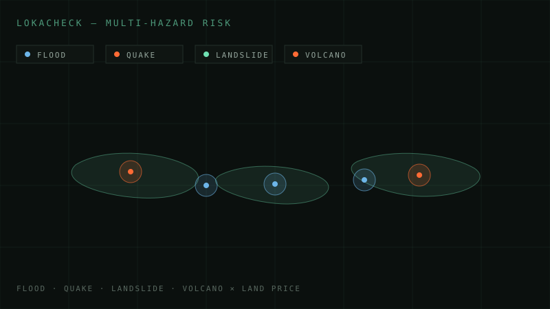
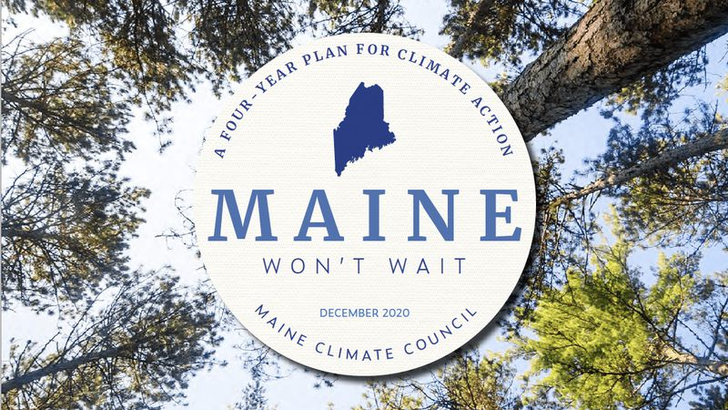
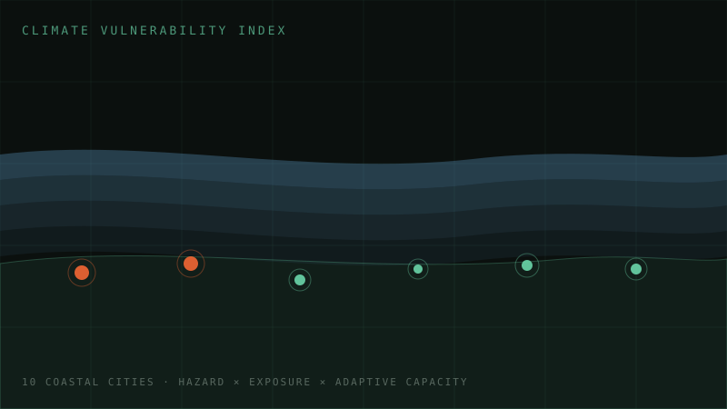

Ismail Rashad
Where business strategy meets spatial thinking. I translate location data into decisions — mobility, climate, and city-scale analytics across Southeast Asia and the United States.
About Me
WHO I AMI'm a geospatial data analyst with 4+ years of experience across Southeast Asia and the United States, translating spatial data into decision-ready insights through research, consulting, pre-sales, and analytics roles.
At GoTo Group (Gojek) I design and analyze experiments evaluating routing and cartography improvements. At Datakota I analyze and deliver geospatial intelligence projects across Indonesia — from retail market analysis to climate vulnerability mapping. I'm also a volunteer research assistant with NYU CUSP × University of Connecticut, researching urban morphology and energy consumption.
Experienced across urban science, climate, mobility, FMCG, healthcare, and real estate use cases, with a track record of cross-functional work aligning analysis with stakeholder needs.
Full profile & CV
Explore
WHERE TO GO NEXTProjects →
Network analysis, climate risk indices, solar siting, mobility optimization — case studies from LA County to coastal Indonesia.
SHEET B — ACADEMIC RECORDResearch & Teaching →
Research assistantships at NYU, UConn, and ITB, plus six teaching roles in GIS and urban planning — the academic side of my work.
SHEET C — CONSULTINGServices →
Location intelligence, market research, climate risk assessment, and spatial data products for organizations across SEA and beyond.
SHEET D — REPORTS & WRITINGPublications →
StoryMaps, technical reports, and applied research outputs on emergency access, renewable siting, and urban systems.
SHEET E — SPEAKING & MEDIATalks →
Conference panels, competition presentations, and media coverage — from Regional Tech Summit to NYU GIS Day.
Life Lines — Emergency Care Access in Los Angeles
Network-based drive-time analysis for 90+ hospitals across LA County, identifying access gaps for 2.8M residents beyond 15-minute trauma response zones. Findings supported spatial equity recommendations for emergency healthcare infrastructure.
View project report

LokaCheck — Climate Risk Web App
Interactive tool for real-estate developers navigating disaster and climate risk across Indonesia — flood, earthquake, landslide, and volcano layers with land price overlays.
Live app

Solar PV Siting — Maine, USA
Spatial suitability analysis identifying optimal solar sites along the I-95 corridor — slope, aspect, and solar radiation modeling supporting Maine's 80% renewable target by 2030.
View report

Climate Vulnerability Index — 10 Coastal Cities
Composite hazards–exposure–adaptive-capacity index for 10 Indonesian coastal cities, delivered for NGO and civil society clients via Datakota.
Case study
Field Map
EVERY ROLE & PROJECT, MAPPEDCLICK MARKERS FOR THE STORY · USE CTRL/⌘ + SCROLL TO ZOOM